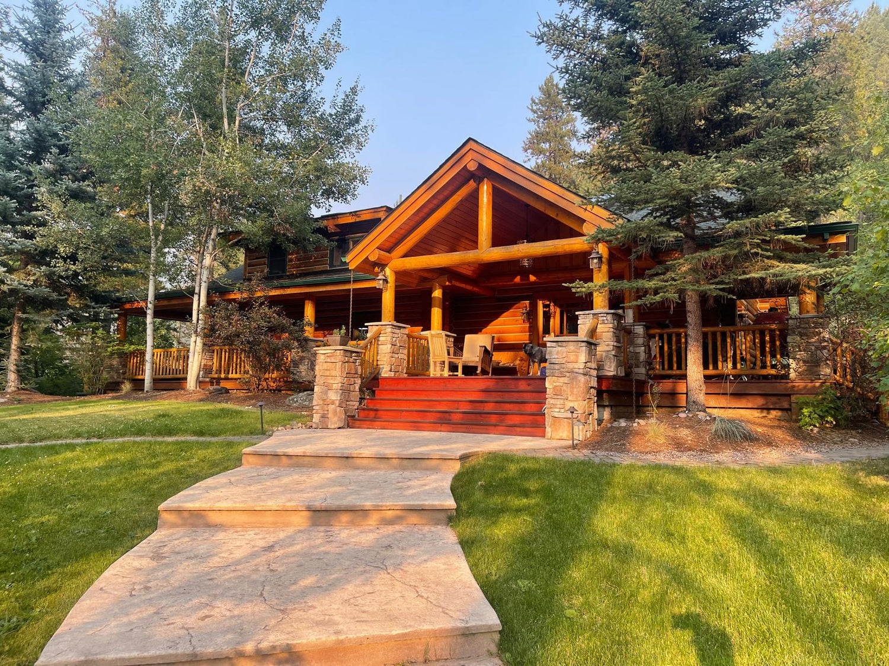

Leadership
Why Leaders Need Emotional Healing
High performance without emotional integration is a debt that eventually comes due. Here's why the inner work isn't a distraction from leadership — it's the foundation of it.
Read more →
Writing
High performance without emotional integration is a debt that eventually comes due. Here's why the inner work isn't a distraction from leadership — it's the foundation of it.
Read more →There is something that happens in the body when you spend three days in the mountains without a screen. Science is only beginning to catch up to what the ancients always knew.
Read more →The next competitive advantage isn't a new SaaS tool. It's leaders who know how to feel, listen, and build organizations that people actually want to belong to.
Read more →Ten days of silence in the mountains changes your relationship to uncertainty. As a former CFO, I found that the most important risk I had never modeled was the cost of disconnection from myself.
Read more →Internal Family Systems gave me a language for the inner conflicts I had been suppressing for decades. Here's what I've learned from working with Dr. Richard Schwartz and why every leader should know this model.
Read more →Dysregulated leaders build dysregulated cultures. Understanding your nervous system isn't soft work. It is the highest-leverage thing a founder or executive can do.
Read more →The Montana retreat is where the reading stops and the real work begins.